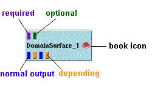
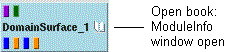

|  |
The module label combines the module name with an index to differentiate multiple instances of a module in a map. Modules have different color for different hosts (default) -- see also CSCW; you can use qualified names (hostname::module name) instead, if you specify this in the COVISE configuration file.
The module icon
has the following features:
| Buttons at the top of the icon: | Input Ports |
| violet:
green: |
connection required
connection optional |
| Buttons at the bottom of the icon: | Output Ports |
| blue:
orange: |
can be connected (normal output)
connection depending |
| Status of an input port can change from optional to required if corresponding output port is connected. |
| Not all blue output ports have to be connected. |
| You may find a grey button at the left or yellow buttons at the top in old module documentation - obsolete! |
|
 |
| Book icon (see example above) at the right side of module (Module Info button): | Entry to ModuleInformation
(Parameters and short description, Input/Output) |
| Module icon:
(anywhere, with right mouse button) |
Entry to other operations with modules, called 'further actions' |